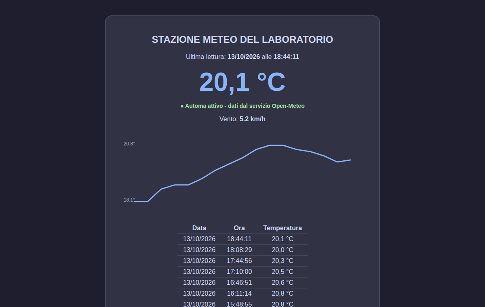
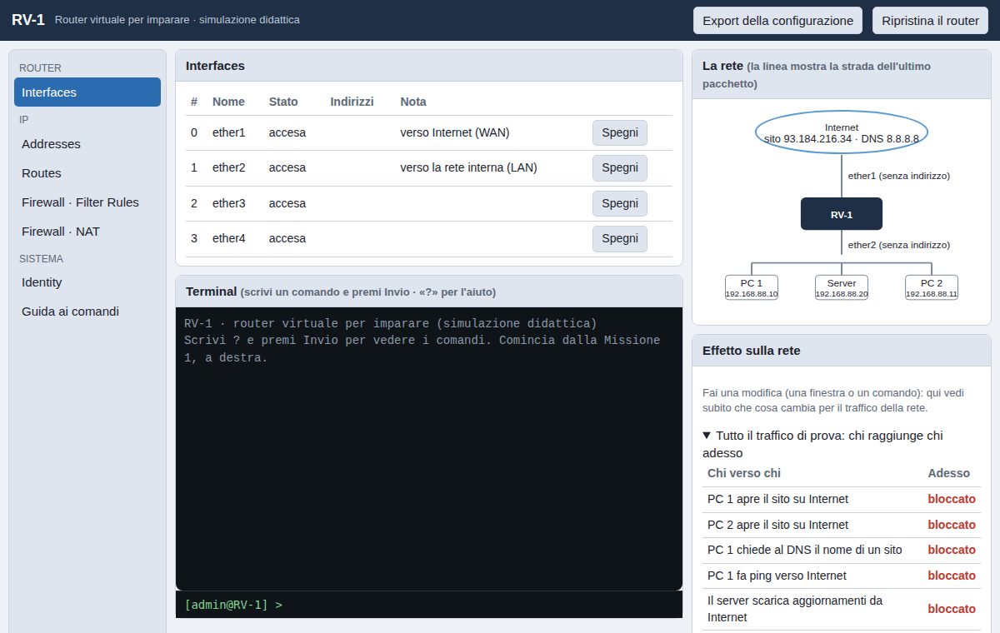

In quarta, durante lo stage, ogni ragazzo porta avanti un progetto vero e tutto suo. Lavora con il prof e con un assistente digitale in una chat che resta scritta: un passo e una domanda alla volta.

Programma che lavora da solo · pagina web · datiUn ragazzo ha costruito un programma che, più volte all'ora, chiede a un servizio pubblico la temperatura e il vento, li mette in un archivio e li mostra in una pagina web, che si apre anche dal telefono. Nessuno deve avviarlo: gira da solo, giorno e notte.
Il prof gli ha chiesto di spiegarlo con parole sue. Da lì è nato un secondo percorso, in cui lo ricostruisce da zero, una tappa alla volta. Qui conta capire, non copiare.
Chiedi di vederlo
Reti · sicurezza · simulazioneUn ragazzo voleva imparare a configurare un router con il firewall, come quelli delle aziende, ma senza avere l'apparecchio. Ora lo fa in una pagina web: scrive i comandi o usa le finestre, come sul router vero.
È nato da una sua domanda: «che cosa cambia nella rete quando configuro?». Adesso, a ogni modifica, la pagina mostra subito chi raggiunge chi, disegna la strada del pacchetto sulla mappa e fa vedere come cambiano i suoi dati.
Chiedi di vederloI progetti sono veri e appartengono ai ragazzi. Per rispetto loro li apriamo solo a chi conosciamo.